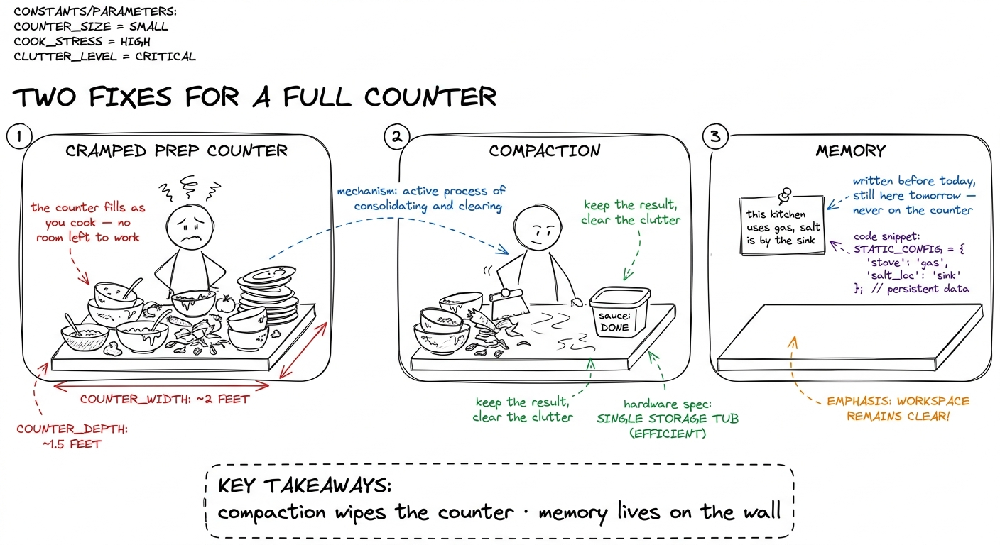
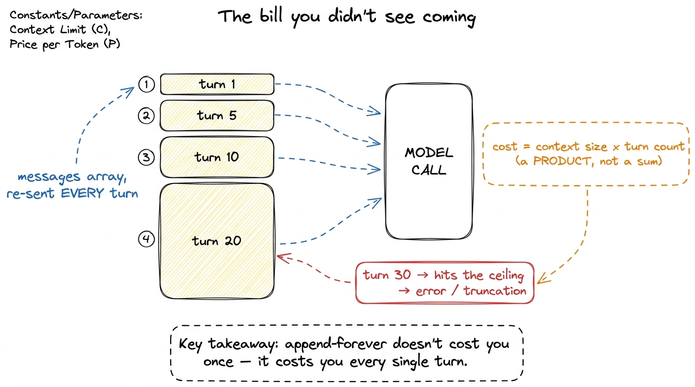
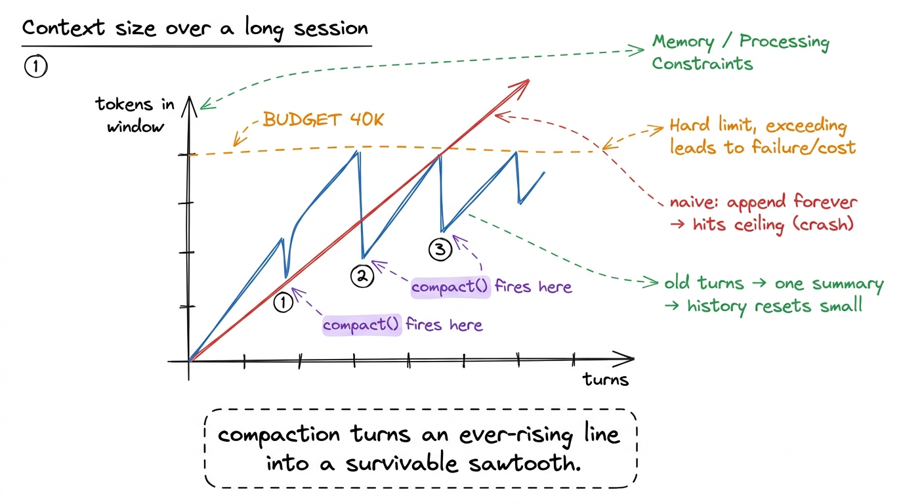
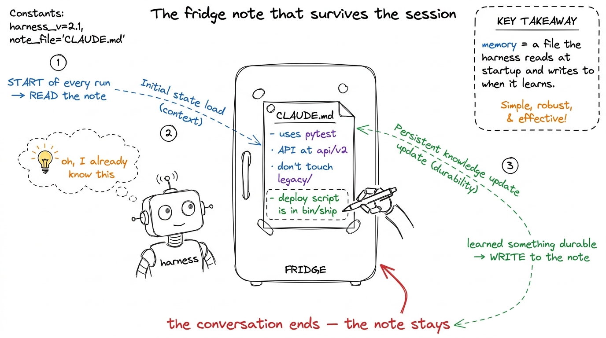
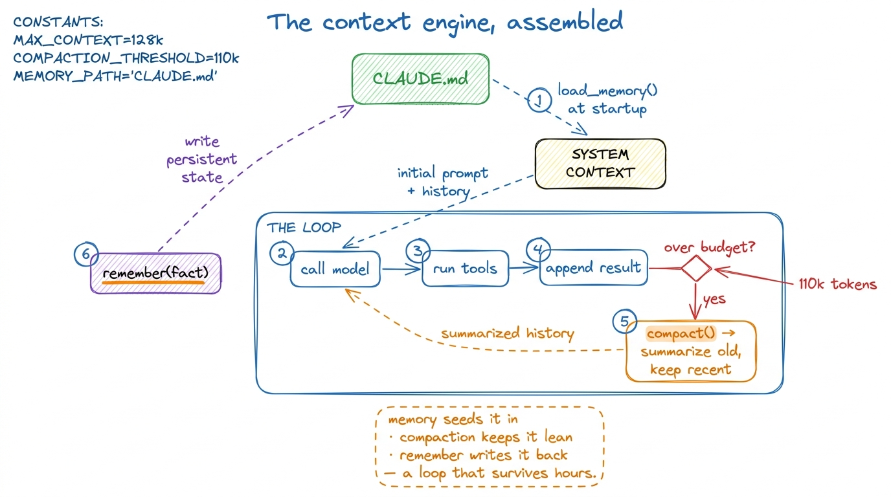

Teaching the context engine (live build)
By the end of this chapter you can stand up on the third morning and teach the cohort to build a context engine live — compaction and persistent memory bolted onto the loop — so their harness survives a two-hour session instead of falling over at turn twenty. This is a build chapter: you type code on a screen while forty people type along. So it isn't enough to understand the idea; you need the exact order to reveal it, the one demo that makes the room gasp, and where everyone gets stuck at the same minute. Let's rehearse all of that.
The one thing you must already own: the Day 2 harness is a loop that appends everything, forever. Every drama today comes from that one fact. If you taught the context window as a resource, the class already believes the window is scarce. Today they feel it break, then they fix it. Feel it, then fix it — that is the whole shape of the morning.
The two things you're building today
Say it plainly at the start so nobody is lost. Today the harness learns two new skills.
One: compaction. When the conversation gets too long, the harness squeezes the old part down into a short summary instead of shipping the whole transcript every turn. The session keeps going; the history stops growing.
Two: memory. Some facts should outlive the conversation entirely — "this project uses pytest," "the API base URL is X." The harness writes those to a file on disk and reads them back at the start of every run. Knowledge that lives outside the window.

figure rendering · The morning in one picture: compaction clears the working surface, memBlock 1 (7:00–7:20) — Break it on purpose
Don't start by explaining. Start by breaking their working harness in front of them. This is the emotional hook of the day, and it takes twenty minutes because they should feel it in their own terminal, not just watch yours.
Open the Day 2 harness. Give it a task that forces many turns — "read these five files, then refactor the helper" — and turn on a token counter that prints the size of the messages array before every model call. That printout is the star of the block.
print(f"turn {n}: sending {count_tokens(messages):,} tokens"). Let it rip. The class watches the number climb — 3,000 · 9,000 · 24,000 · 51,000 — turn after turn, for a task that isn't even big. Say nothing; let it climb. When someone says "wait, why does it keep going up?" — that's your cue. The number climbing on its own beats any slide.
figure rendering · Why the naive loop is a time bomb: the whole history rides along on evCheckpoint question to close the block: "If reading one big file costs 40,000 tokens, and we then take fifteen more turns, roughly how many times do we pay for that file?" (Answer: fifteen more times — it sits in the array and re-ships every turn.) When they get that, they are hungry for the fix.
Block 2 (7:20–8:00) — Build compaction
Now the fix. Forty minutes, typed in stages, running the harness after each.
Plain idea before code: the old turns don't need to be sent word for word — only as their meaning. "We read config.py; the timeout is set in load_settings" is ten tokens replacing a five-hundred-token file dump. So when history gets too long, hand the old part to the model and ask for a short summary. Keep the summary, throw away the transcript.
Build it in three visible steps. Type each, run the harness, let them see it work.
Step 1 — a trigger. Decide when to compact — before the limit, not at it. Pick a budget well under the ceiling.
COMPACT_AT = 40_000 # tokens; well under the 200K ceiling
def should_compact(messages):
return count_tokens(messages) > COMPACT_ATStep 2 — split old from new. Never compact the most recent turns — freshness matters, the model needs the last few exchanges verbatim. Compact only the old middle.
def split_history(messages):
system = messages[0] # never touch the system prompt
recent = messages[-6:] # last few turns stay verbatim
old = messages[1:-6] # everything in between → compact this
return system, old, recentStep 3 — summarize and rebuild. Ask the model to compress the old part, then reassemble a short history.
def compact(messages):
system, old, recent = split_history(messages)
summary = call_model(
[{"role": "user",
"content": "Summarize the work so far. Keep decisions, "
"file paths, and facts we'll need. Be terse.\n\n"
+ render(old)}]
)
return [system,
{"role": "user", "content": "[Summary of earlier work]\n" + summary},
*recent]
# in the loop, right before calling the model:
if should_compact(messages):
messages = compact(messages)
figure rendering · The whole point of compaction in one chart: the naive line crashes intrecent. Give them the rule — "summarize the past, but the present stays sharp." Draw a box around "the last few turns" labeled UNTOUCHABLE. Pre-empt it: write messages[-6:] in a different color when you type it.Block 3 (8:00–8:40) — Build memory
Compaction keeps this session alive. But close the terminal and it's all gone — the agent starts tomorrow knowing nothing, and you re-explain from scratch. Memory fixes that. Forty minutes.
Plain idea: some facts are true across every session — the test command, the conventions, a decision from last week. Those don't belong in the conversation at all. They belong in a file on disk the harness reads at the start of every run and never has to be told again.
Build it in two moves — reading, then writing.
Read at startup. Before the loop even begins, if a memory file exists, load it into the system context. Now the agent starts every run already knowing the project.
def load_memory(path="CLAUDE.md"):
if os.path.exists(path):
return "Project memory:\n" + open(path).read()
return ""
# at startup, fold it into the system prompt:
system_prompt = BASE_PROMPT + "\n\n" + load_memory()Write during the run. Give the model a tool to save a durable fact. When it learns something worth keeping, it appends to the file — and next session, load_memory reads it back.
def remember(fact: str):
"""Append a durable fact to project memory."""
with open("CLAUDE.md", "a") as f:
f.write(f"- {fact}\n")
return "saved to memory"
# register `remember` as a tool the model can call, like any other.remember("uses pytest; run with pytest -q"). End the run. Literally quit the program and restart. Run 2: ask the SAME question — it answers instantly, on turn one, because load_memory fed it the fact at startup. "Run one, it investigated. Run two — after we closed everything — it just knew." Memory, felt in the body.
figure rendering · Memory as a fridge note: read at the start of every run, appended to wCLAUDE.md is not a metaphor — it's a literal file Claude Code reads at the start of every session in your repo, which is why it already knows your build commands. pi keeps durable context the same way; Cursor has .cursorrules. Every serious harness grew some version of "a file on disk that seeds the agent's knowledge," because re-explaining your project every session is unbearable once you've felt the difference. Your students just built the mechanism the whole industry converged on.Block 4 (8:40–9:00) — Put it together and stress it
Twenty minutes to make the two pieces one thing and prove the harness is now durable. This is where the day pays off.
Draw the full loop with both pieces slotted in: at startup load_memory seeds the system prompt; every turn should_compact may fire; during the run remember may write to the fridge note. One diagram, both mechanisms, one loop.

figure rendering · The finished context engine: memory feeds the loop at startup, compactremember call scroll past (memory writing), then watches the task finish — something the Day 2 harness literally couldn't do. For the kill: quit, restart, give a follow-up, and watch it start already knowing the repo. "Yesterday this died at turn twenty. Today it ran ten minutes, survived, and came back still knowing your code. That's a context engine."1 If you have a fast group, the natural stretch goal is a third lever they'll have read about: write less in — don't cat a whole file when a grep answers the question. It's the cheapest lever of all and it pairs beautifully with today's two. But don't rush it in; a clean compaction + memory build is a full, satisfying morning on its own.
Final checkpoint before you release them: "Your harness has two kinds of memory now. Which one survives closing the program, and which one only lives inside a single session?" (Memory / CLAUDE.md survives; compaction is within-session.) If they can answer that cleanly, they own the context engine.
You can now teach
- Break-it-first: run the Day 2 harness with a token counter and let the class watch the window climb and crash — the emotional hook for the whole day.
- Compaction as a "previously on…" recap: trigger on a budget, split old from recent, summarize the old, and never touch the last few turns — with the sawtooth chart that proves it.
- Memory as a fridge note (
CLAUDE.md): read at startup so the agent begins already knowing the project, and aremembertool to write durable facts back — shown with the quit-and-restart two-run demo. - The common bugs and their one-line fixes: compacting the present turn (senility), and dumping transcripts into memory (permanent bloat).
- The production line: this exact sawtooth-and-fridge-note pattern is auto-compaction and
CLAUDE.mdin Claude Code, bounded context in pi,.cursorrulesin Cursor — the pattern the whole field converged on. - The block-by-block pacing of a 7:00–9:00 build: break it (20m), compaction (40m), memory (40m), assemble and stress-test (20m) — with the checkpoint questions that tell you the room is with you.